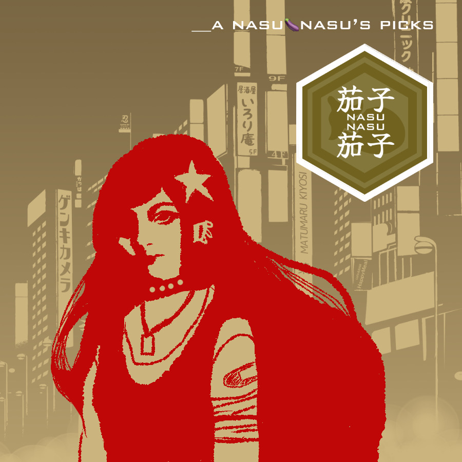

Music⭐️Echoes & Shadows🌙

Thoughts on How to Interact with AI💭
We live in an era where opinions are divided and conflicts arise…
I feel people fall into two camps: those who instinctively dislike it, and those who relentlessly pursue technology.
I fall somewhere in the middle.
I believe that, fundamentally, it’s healthy for humans to use AI only to the extent that it helps us with things we can’t do ourselves.
In the past, home appliances would start when you pressed a switch and stop when you turned it off.
The concept of standby power didn’t exist.
Before we knew it, the concept of standby power emerged, and it became the norm for plugs to be constantly plugged into outlets.
Technology evolves rapidly.
And the concept of “thinking” has been introduced into the appliances themselves.
We now live in an era where you can say, “◯◯ (AI), please set the room to a comfortable temperature by the time I get home!
Order the pizza for dinner delivery too! And book my gym session for 10 a.m. tomorrow!” and it’s possible.
But doesn’t that mean we’re regressing as human beings? We’ll end up like apes.
If we reduce the amount of thinking we do, I believe we’ll end up with a sick society—even if we still look human and can still study.
And communication fees, device costs, and subscription fees just keep rising.
At some point, I realized I’m the type who wants to cherish and use old things until they break, so I use an old iPhone with limited storage.
So, I do what I can on my own and only ask for help with the parts I can’t manage…
I think that’s enough.
When it comes to appliances, I feel it’s more human-like if they actually turn off when you unplug them. I don’t deny the value of AI, but going too far isn’t healthy.
Before we knew it, the prevailing trend in society became “It’s a hassle! Save time! Cost-effectiveness!”
Entrusting so many things to machines in such a state erodes a healthy mind.
I see our relationship as more of a partnership, but I believe we mustn’t become overly dependent.
The “Japanese Culture Theme” I’m creating involves only translation and text-to-speech.
I composed this music a few months ago.
To be honest, I did have reservations about relying on AI for music, so I canceled my Udio subscription and am currently exploring other options.
I had the AI help me recreate the sound of songs that were popular before the year 2000—a style I can’t go back to now. I couldn’t create those on my own. But since that alone would be boring, I wanted to add a little humor to them.
I had the AI handle the music, vocals, and translation, but I came up with the lyrics myself.
Normally, I could draw the artwork myself, but due to certain circumstances, I handle the music jacket illustrations on a case-by-case basis and only outsource the music itself.
This is a work I created using stop-motion animation after editing the footage. Sometimes the animation is entirely my own work. Since much of it is handmade, it’s not perfect, but I’d be grateful if you’d take a look.
There’s no “Japanese-ness” or “wabi-sabi” here—it’s comedic, and the theme depends on my mood. I created these works under a different pseudonym in the past, but since there weren’t many opportunities to share them, I’m releasing them here.
I feel people fall into two camps: those who instinctively dislike it, and those who relentlessly pursue technology.
I fall somewhere in the middle.
I believe that, fundamentally, it’s healthy for humans to use AI only to the extent that it helps us with things we can’t do ourselves.
In the past, home appliances would start when you pressed a switch and stop when you turned it off.
The concept of standby power didn’t exist.
Before we knew it, the concept of standby power emerged, and it became the norm for plugs to be constantly plugged into outlets.
Technology evolves rapidly. And the concept of “thinking” has been introduced into the appliances themselves.
We now live in an era where you can say, “◯◯ (AI), please set the room to a comfortable temperature by the time I get home!
Order the pizza for dinner delivery too! And book my gym session for 10 a.m. tomorrow!” and it’s possible.
But doesn’t that mean we’re regressing as human beings? We’ll end up like apes.
If we reduce the amount of thinking we do, I believe we’ll end up with a sick society—even if we still look human and can still study.
And communication fees, device costs, and subscription fees just keep rising.
At some point, I realized I’m the type who wants to cherish and use old things until they break, so I use an old iPhone with limited storage.
So, I do what I can on my own and only ask for help with the parts I can’t manage…
I think that’s enough.
When it comes to appliances, I feel it’s more human-like if they actually turn off when you unplug them. I don’t deny the value of AI, but going too far isn’t healthy. Before we knew it, the prevailing trend in society became “It’s a hassle! Save time! Cost-effectiveness!”
Entrusting so many things to machines in such a state erodes a healthy mind.
I see our relationship as more of a partnership, but I believe we mustn’t become overly dependent.
The “Japanese Culture Theme” I’m creating involves only translation and text-to-speech.
I composed this music a few months ago.
To be honest, I did have reservations about relying on AI for music, so I canceled my Udio subscription and am currently exploring other options.
I had the AI help me recreate the sound of songs that were popular before the year 2000—a style I can’t go back to now. I couldn’t create those on my own. But since that alone would be boring, I wanted to add a little humor to them. I had the AI handle the music, vocals, and translation, but I came up with the lyrics myself. Normally, I could draw the artwork myself, but due to certain circumstances, I handle the music jacket illustrations on a case-by-case basis and only outsource the music itself.
This is a work I created using stop-motion animation after editing the footage. Sometimes the animation is entirely my own work. Since much of it is handmade, it’s not perfect, but I’d be grateful if you’d take a look. There’s no “Japanese-ness” or “wabi-sabi” here—it’s comedic, and the theme depends on my mood. I created these works under a different pseudonym in the past, but since there weren’t many opportunities to share them, I’m releasing them here.
⭐️Click here for the English version⭐️
Watch my latest video on loops!
⭐️Click here for the Japanese version⭐️
Watch my latest video on loops!